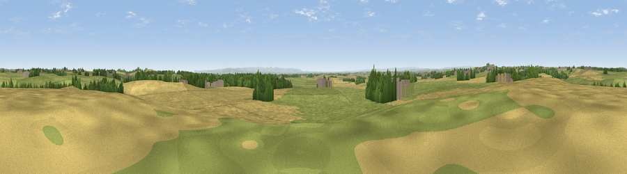

Redding's Hill
#15045 in England · top 37% of its area beats it · near Trimdon VillageThe view, rendered

A 360° render of this exact spot computed from the terrain model, tree cover and land cover — summer colours, afternoon light, calibrated against photographs of famous viewpoints. Real trees, hedges and buildings will differ in detail.
The panorama
Grey silhouette: terrain skyline in each direction (720 bearings, Earth curvature and refraction included). Dashed green: skyline with trees (+15 m) and buildings (+8 m) as obstacles. Blue strip: how far the ground is visible on each bearing.
Where the view opens
Wedge length = distance to the farthest visible ground on that bearing (vegetation-aware). Rings at 10, 25 and 50 km.
What fills the view
46% grassland · 41% cropland · 10% woodland · 3% built-up
Angular shares of the visible panorama (visual magnitude), not map area. Landscape diversity 0.46 (0–1 Shannon).
Key numbers
More beautiful places nearby
The staircase of upgrades: each row has a higher view potential than everything closer. Driving times are estimates from straight-line distance, calibrated against real road routing — check an actual route before setting out.
| Place | Direction | Drive | Score |
|---|---|---|---|
| Catley Hill | W · 4 km | ~9 min | 67.4 |
| Viewpoint near Elwick | E · 4 km | ~10 min | 70.5 |
| Viewpoint near Quarrington Hill | NW · 8 km | ~16 min | 73.1 |
| Viewpoint near Easington Colliery | NNE · 13 km | ~23 min | 74.4 |
| Viewpoint near Houghton-le-Spring | N · 17 km | ~30 min | 76.0 |
| Viewpoint near Newton Under Roseberry | SE · 23 km | ~37 min | 78.3 |
| Viewpoint near Lazenby | SE · 23 km | ~38 min | 86.4 |
| Warsett Hill | ESE · 32 km | ~49 min | 86.8 |
54.69635, -1.38443 · source: osm peak · position refined by local search. Computed location — check access rights before visiting.